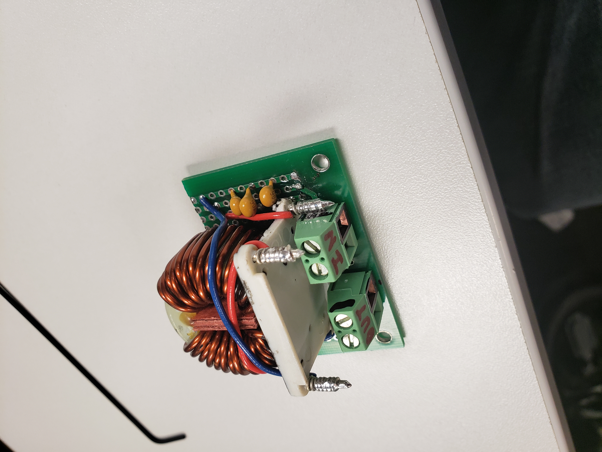
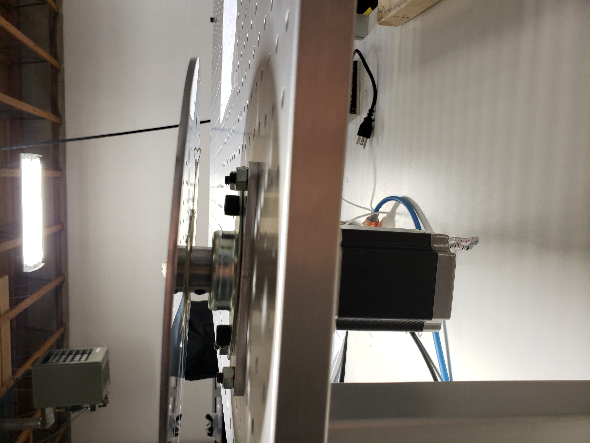
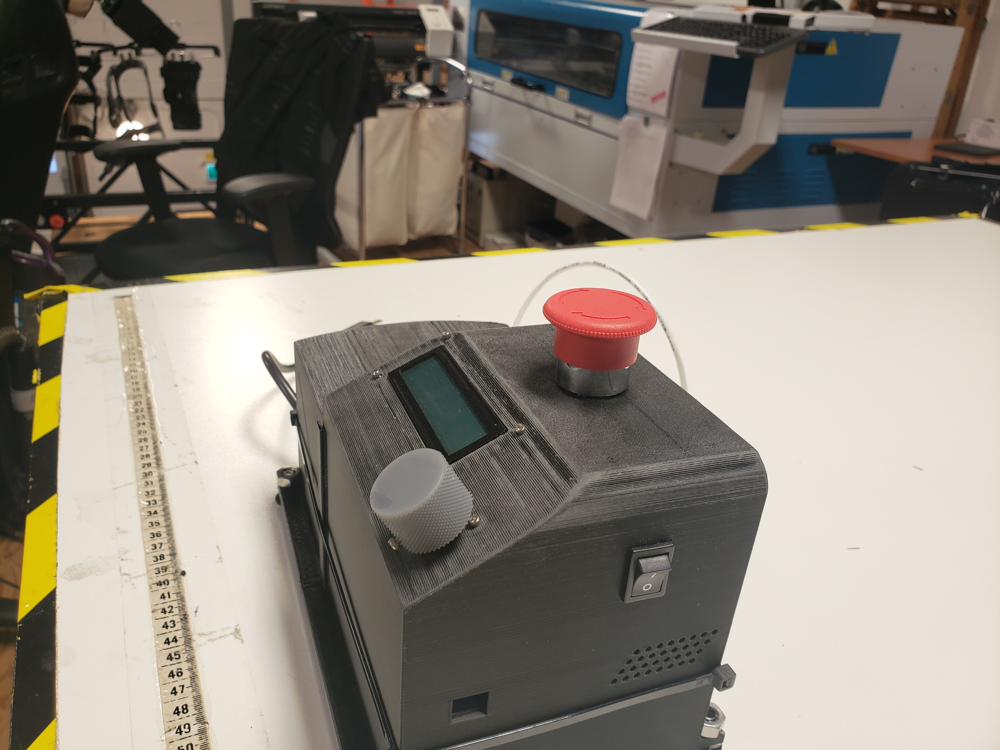
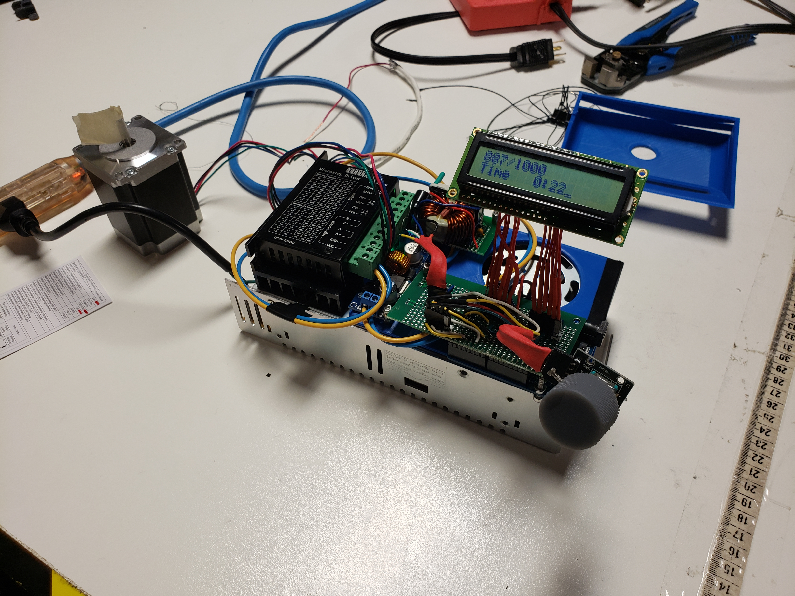
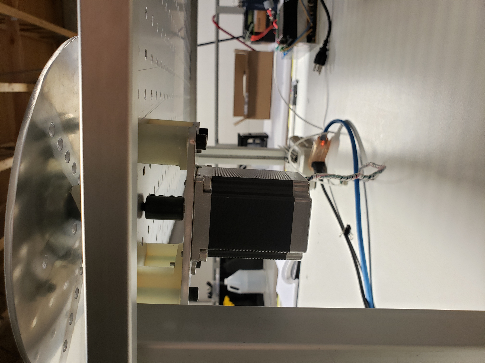
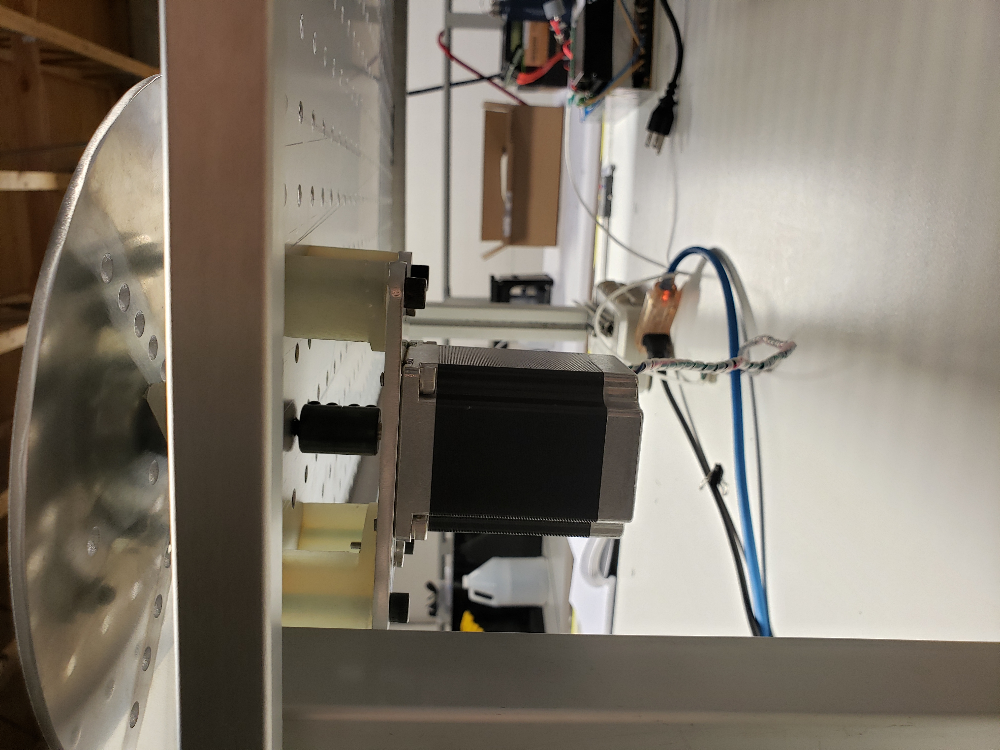
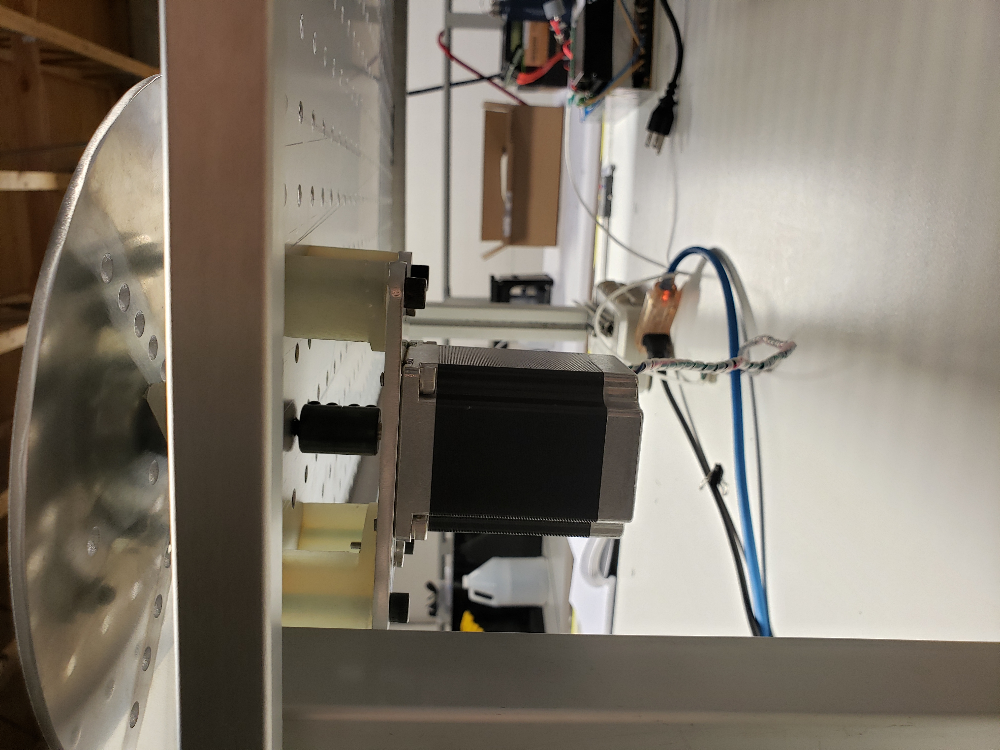
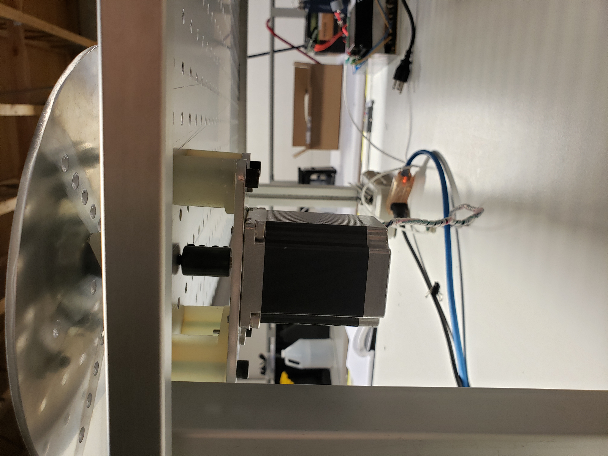

 



While working at Stoko, I was asked to build a cyclic tester capable of running more than a million cycles without failing in order to test lifetime estimates of the companies product (an athletic tight that doubles as a knee brace). The machine was designed to be as robust and modular as possible to adapt to an everchanging use-case, such as fabric pilling tests, stretch and recovery of fabric, and hardware ware and tear to name a few. It features a powerline band pass filter to prevent motor noise from disrupting the micro controller, a motor assembly that can be moved anywhere on a peg board, cycle counts, and a timer. It was designed and constructed in the last two months of my time at Stoko.